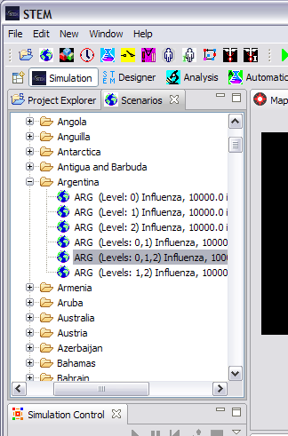
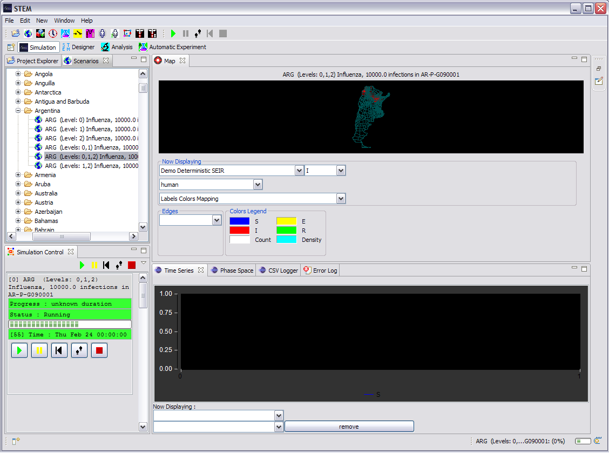

When you first start STEM it will display the Simulation perspective containing a Scenarios view. This view contains a hierarchical display of the Scenarios that are built in to STEM and are ready to start a Simulation. See Figures 1 and 2 below.
Figure 1.
Expand the tree displayed in the Scenarios view to display the available Scenarios. Select one of the displayed Scenarios by "double-clicking" on its title, Figure 2.
Figure 2
STEM will immediately begin reading in the data that defines the Simulation. It's progress is displayed at the bottom of the window. The amount of time it takes to read in the data for the Simulation will depend upon the size of the model and the characteristics of the host computer. On a fast computer with more than 2 gigabytes of RAM and fast disks the Scenario illustrated in Figure 3, below, will load and began execution in less than 5 seconds. On a smaller slower machine (e.g., a small laptop with slow disks), this could take 30 seconds or longer).
Figure 3
In Figure 3, we see the state of the simulation after about 55 iterations. In this case, the disease is spreading across common borders from starting in the north and moving south.
The "Simulation control" area in the lower left is used to "Start", "Pause", "Reset", "Step" and "Stop" all the active Simulations.
{kind=link}